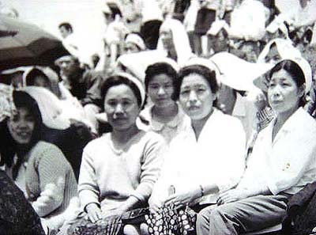

大牟田小学校から撮る  （写真提供：中野さん） 前列右から3人目が中野アキオさん。ＣＯ中毒患者救済特別立法の成立を求める闘いで、 昭和42年7月14日から丸6日間の144時間、「ＣＯ中毒患者家族の会」の仲間と共に三川鉱坑底に座り込んだりもした。 平成11年、80歳で他界。
（写真提供：中野さん） 前列右から3人目が中野アキオさん。ＣＯ中毒患者救済特別立法の成立を求める闘いで、 昭和42年7月14日から丸6日間の144時間、「ＣＯ中毒患者家族の会」の仲間と共に三川鉱坑底に座り込んだりもした。 平成11年、80歳で他界。
前列右から3人目が中野アキオさん。ＣＯ中毒患者救済特別立法の成立を求める闘いで、 昭和42年7月14日から丸6日間の144時間、「ＣＯ中毒患者家族の会」の仲間と共に三川鉱坑底に座り込んだりもした。 平成11年、80歳で他界。